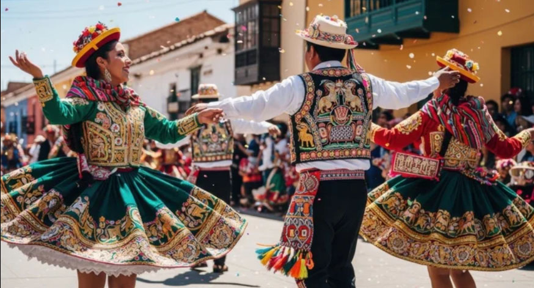
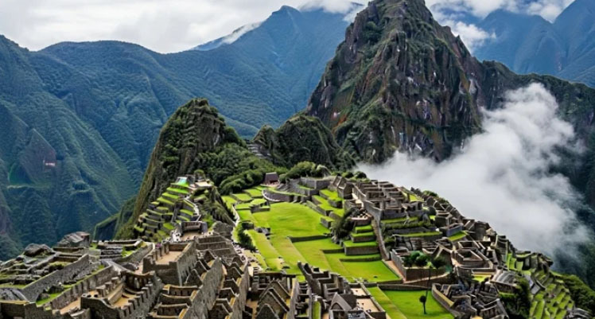
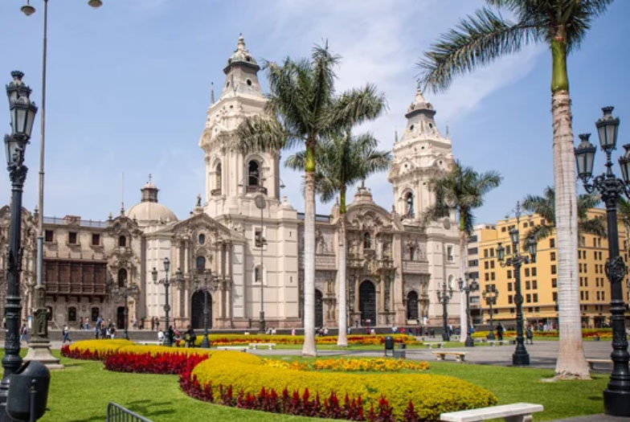
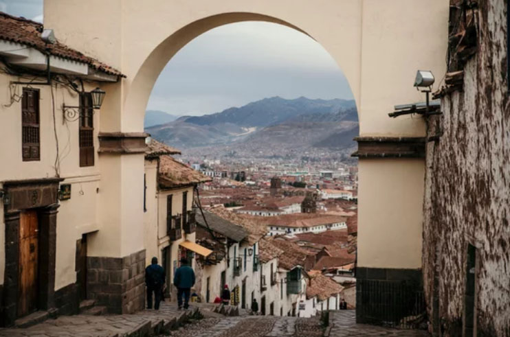
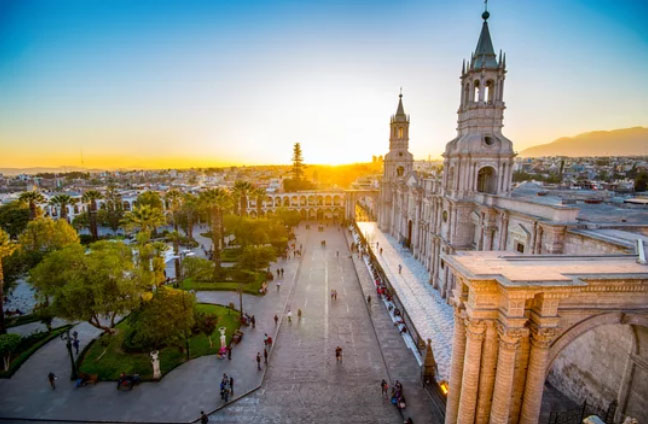
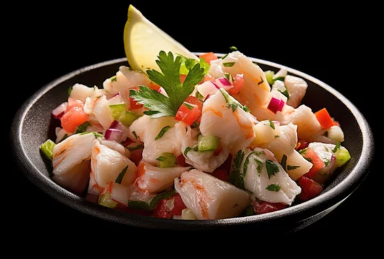
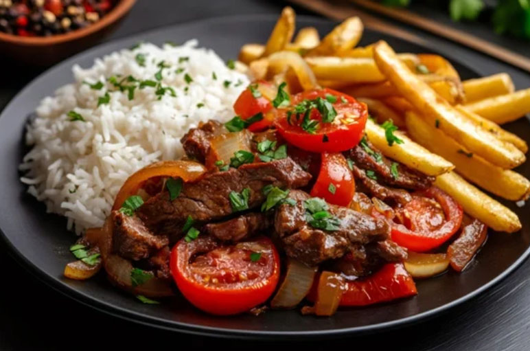

Ancient Heritage & Modern Luxury
Discover the Heart of Peru
Journey through time from the sacred peaks of the Andes to the vibrant streets of modern Peru. Experience an immersion into a civilization that shaped history, redefined by contemporary refinement.
Historical Wonders
Iconic Landmarks
Explore the architectural marvels left by the Inca Empire, each stone telling a story of celestial alignment and engineering genius.

Machu Picchu
An awe-inspiring Inca citadel perched high in the Andes, where magnificent stone architecture and breathtaking mountain scenery reveal the enduring legacy of Peru's ancient civilization.

Nazca Lines
Vast geoglyphs etched into the desert over 2,000 years ago, forming mysterious figures so immense they can only be fully appreciated from the sky.

Sacsayhuaman
An immense Inca fortress built with colossal stones so precisely carved and fitted that they continue to astonish engineers, overlooking the historic heart of Cusco.
Urban Exploration
Cities of Distinction
From vibrant coastal streets to timeless Andean landscapes, discover cities where ancient traditions, colonial heritage, and modern life come together.

Lima
A dynamic coastal capital where colonial architecture, world-renowned cuisine, and modern city life come together along the Pacific Ocean.

Cusco
Once the capital of the Inca Empire, Cusco blends magnificent stonework, Spanish colonial charm, and vibrant Andean traditions in the heart of Peru.

Arequipa
Famous for its elegant white volcanic-stone architecture, Arequipa is surrounded by majestic volcanoes and rich in colonial history and culture.
A Culinary Journey Across Three Regions
Peru's gastronomy is a masterclass in fusion, blending ancient Incan ingredients with Spanish, African, and Asian influences to create a world-renowned culinary landscape.

Ceviche
Succulent marinated pork with pineapple, cilantro, and onions on a handmade tortilla.

Lomo Saltado
A hearty stir-fry of beef, onions, and tomatoes, perfectly marrying Peruvian and Chinese techniques.
Pisco Sour
The iconic cocktail of Peru, blending Pisco brandy with lime, egg white, and Angostura bitters.
ペルー共和国の歴史
Republic of Peru
Peru's history is characterized by diverse ancient advanced civilizations, the prosperity and tragic fall of the Inca Empire (the largest in South America), Spanish colonial rule as a viceroyalty, post-independence turmoil, and modern economic growth alongside political instability
古代・先植民地期
世界最古級の文明（紀元前3000年頃～）
アメリカ大陸最古の都市文明とされる世界遺産「カラル遺跡」が誕生。
多様な地方文明の開花 （～15世紀初期）
巨大な地上絵で知られる「ナスカ文化」、高度な金細工技術を持つ「チムー文化」、海岸部の砂漠都市「チャン・チャン」などが各地で繁栄。
インカ帝国時代 帝国の台頭と大繁栄 （15世紀半ば～）
クスコを首都とする「インカ帝国（タワンティンスーユ）」が、第9代皇帝パチャクテクのもとでアンデス全域を統治する巨大帝国へと急成長。高度な石造建築、貢納制度、広大な道路網（インカ道）を確立。
植民地時代（近世）
スペインによる征服と悲劇 （1532年～）
フランシスコ・ピサロ率いるスペイン人の侵攻により、皇帝アタワルパが捕らえられ処刑。インカ帝国は滅亡。1535年に新たな首都として「リマ（王たちの都市）」が建設される。
ペルー副王領の設置 （1542年）
南米におけるスペイン植民地支配の最大拠点となり、ポトシ銀山（現ボリビア）などから奪った富が集中。カトリックの布教が進む一方、先住民族の過酷な強制労働が続く。1780年には先住民の指導者トゥパック・アマル2世による大規模な反乱が勃発（のちに鎮圧）。
近代（独立と周辺国との戦争）
ペルーの独立宣言 （1821年）
南米解放の英雄ホセ・デ・サン・マルティンがリマで独立を宣言。1824年、シモン・ボリバルやスクレ将軍率いる革命軍がアヤクーチョの戦いでスペイン軍に完全勝利し、独立が確定。
グアノ・ブームと日系移民（19世紀半ば～）
鳥糞石（グアノ）の輸出で経済が一時的に急成長。労働力不足を補うため、1899年に「佐倉丸」で初の日本人移民が上陸（南米への初の日系移民）。
太平洋戦争 （1879年～1883年）
硝石鉱山の領有権を巡り、ボリビアと同盟を組んでチリと激突。敗北したペルーは領土の一部を失い、首都リマを一時占領されるなど甚大な打撃を受ける。
近現代（政治の混迷と過激派テロ）
軍事政権と左翼テロの恐怖 （1960年代～1980年代）
ベラスコ将軍による農地改革などの軍事民族主義政策を展開。1980年代には毛沢東主義を掲げる過激派テロ組織「センデロ・ルミノソ」が台頭し、凄惨なテロ活動により国内が泥沼の内戦状態化、経済もハイパーインフレで崩壊寸前に陥る。
民政移管と「失われた12年」の絶望 （1980年～1992年）
軍事政権の終焉に伴い、1980年に民主選挙による民政移管を果たす。しかし、待っていたのは前政権から引き継いだ巨額の債務と、新政権の失政による年率7,500%という想像を絶するハイパーインフレ（経済崩壊）であった。さらに、政府の目が届かない地方の貧困と差別の闇を突いて台頭した「センデロ・ルミノソ」の猛威に対し、形だけの民主主義政府は有効な手を打てず、国民は国家の機能不全とテロの恐怖に完全に絶望。この「決められない民主主義」への強烈な不満が、1990年に誕生するフジモリ政権の強権体制（劇薬）を国民自身が熱狂的に支持する下地となった。
フジモリ政権の功罪 （1990年～2000年）
日系二世のアルベルト・フジモリが大統領に就任。強硬な治安対策でセンデロ・ルミノソの最高指導者を逮捕しテロを制圧。新自由主義改革で経済を再建する一方、独裁的な手法（自主クーデター）や人権侵害、汚職スキャンダルにより失脚・亡命へ。
現代
経済成長と激しい政変 （21世紀～現在）
豊富な鉱物資源（銅や金）の輸出、および世界遺産「マチュピチュ」や独自のガストロノミー（食文化）を武器に、南米トップクラスの経済成長を達成。
現代の歩み
近年は歴代大統領が汚職で次々と訴追・逮捕されるなど、大統領の弾劾や交代が相次ぐ激しい政治的不安定が続いているが、経済の基盤は底堅さを維持し、多角的な国家発展を模索し続けている。
1879年から1883年にかけて発生した太平洋戦争（西: Guerra del Pacífico）は、南米の太平洋沿岸を舞台に、チリと、ペルー・ボリビアの交渉同盟軍との間で戦われた歴史的な紛争です。
日本の歴史で知られる「太平洋戦争（1941年〜1945年）」とは完全に異なる戦いであり、日本は一切関係していません。この南米の太平洋戦争における、ペルー側の「悲劇的な滅亡と混乱」の背景となる重要なポイントは以下の4つです。
1. 紛争の原因は「砂漠の資源」
- 舞台は3国の国境が接していたアタカマ砂漠です。
- 当時、肥料や火薬の原料として世界中で高値で取引されていた硝石（しょうせき）やグアノ（鳥糞石）の権益を巡り、国境線と税金を巡る対立が激化しました。
2. ペルーが巻き込まれた「秘密同盟」
- もともとはボリビアとチリの間の関税トラブルが引き金でした。
- しかし、ペルーはボリビアと秘密防衛同盟条約を結んでいたため、自動的にボリビア側としてチリとの戦争に大々的に巻き込まれることになりました。
3. チリ軍によるペルー首都の占領
- チリ軍は強力な海軍力を背景に制海権を握り、連戦連勝でペルー領内へ進軍しました。
- 1881年には、ペルーの首都リマがチリ軍によって占領され、街や歴史的な図書館が破壊・略奪されるなど、ペルーにとっては極めて屈辱的で悲劇的な展開を迎えました。
4. もたらされた「重大な結果」
- 1883年のアンコン条約によって戦争は終結しました。
- ペルー: 南部の領土（タラパカ州など）をチリに割譲することになり、経済的に大打撃を受け、戦後は長期にわたる政治的混乱（内戦）に突入しました。
- ボリビア: 太平洋に面した領土をすべてチリに奪われ、現在に続く完全な内陸国になってしまいました。
ペルーの歴史を語る上で、この戦争は「インカ帝国の滅亡」に並ぶ国家的な大試練の時代として刻まれています。
ミゲル・グラウ・セミナリオ（Miguel Grau Seminario, 1834–1879）は、ペルーの歴史において「国家最高の英雄」として絶大な尊敬を集めている海軍の司令官（大提督）です。
南米の太平洋戦争（1879年〜1883年）で圧倒的に不利な状況下、装甲艦「ウアスカール（Huáscar）」を率いてチリ海軍を驚異的な知略で翻弄し続けました
彼がペルー国内だけでなく、敵国であったチリからも歴史的英雄として深く尊敬されている理由は、その類まれな能力と、戦場で見せた強烈な「騎士道精神」にあります。
彼の生涯と英雄と呼ばれる所以となる重要なポイントは以下の通りです。
1. 「海の紳士（El Caballero de los Mares）」
グラウの最も有名な別名は「海の紳士（騎士）」です。彼は戦争中、卑劣な攻撃や無防備な都市への砲撃を徹底して拒否しました。
- 敵兵の救助: 1879年のイキケの海戦で、チリの木造コルベット艦「エスメラルダ」を撃沈した際、グラウは即座に海に投げ出されたチリの将兵たちを救助させ、丁重に扱いました。
- 敵の遺族への手紙: 戦死したチリの艦長アルトゥーロ・プラット（チリ側の国民的英雄）の勇敢さを称え、グラウはプラットの妻へ追悼の衣服や遺品を添えて、深く心に染みるお悔やみの手紙を送りました。このエピソードは今も両国で語り継がれています。
2. 「ウアスカール」による奇跡の数ヶ月
ペルー海軍は軍艦の数や性能でチリ海軍に大きく劣っていました。しかし、グラウが指揮する「ウアスカール」は、1879年5月から10月までの約5ヶ月間、たった1隻でチリの補給線を断ち切り、港を奇襲し、チリ海軍を釘付けにしました。
- チリ側はこの1隻のせいで陸軍の進軍を完全に止められ、「ウアスカールを捕獲・撃沈しない限り勝利はない」と全海軍をあげてグラウの捜索に乗り出すことになります。
3. アンガモスの海戦と壮絶な最期
1879年10月8日、ペルー南部のプンタ・アンガモス沖で、ウアスカールはついにチリ海軍の最新鋭装甲艦を含む6隻の艦隊に包囲されます。
- 1対6の死闘: 逃げ切れないと悟ったグラウは、圧倒的な戦力差を前にして決して降伏せず、勇敢に決戦を挑みました。
- 艦上での壮絶死: 戦闘開始から間もなく、チリ軍の徹甲弾がウアスカールの司令塔を直撃し、グラウは即死（戦死）しました。しかし、残された部下たちも指揮官の意志を継ぎ、船を自沈させようとするまで最後まで戦い抜きました。
4. 現代に続くレガシー
グラウの死によってペルーは制海権を完全に失い、これがリマ陥落へと繋がる最大の転換点となりましたが、彼の生き様はペルー国民の誇りそのものとなりました。
- 10月8日は祝日: 彼が戦死した10月8日は、ペルーでは「アンガモスの海戦記念日」として国家の祝日に指定されています。
- 議会での儀式: ペルー議会の本会議が始まる際、最初の出席確認では必ず「ミゲル・グラウ・セミナリオ大提督」の名前が読み上げられ、全議員が「Presente!（ここに在り！）」と答える伝統があります。
- 街の広場、紙幣、海軍の主要な軍艦（歴代の旗艦「アルミランテ・グラウ」）など、ペルーのいたるところに彼の名が刻まれています。